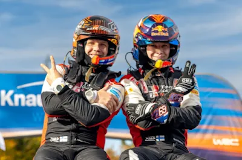
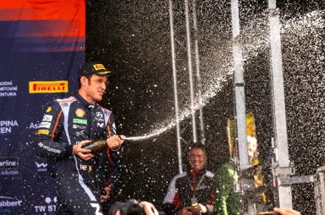
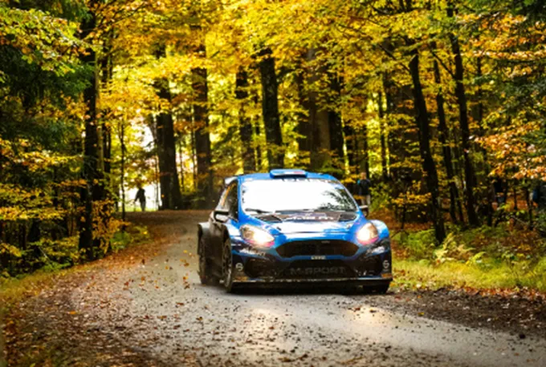
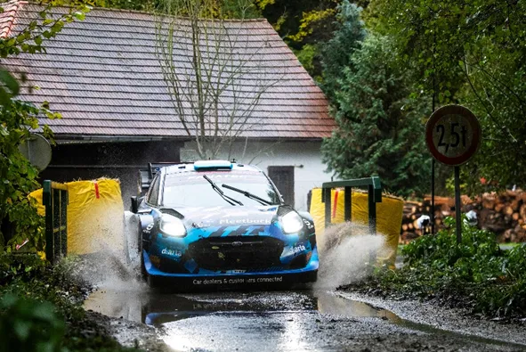
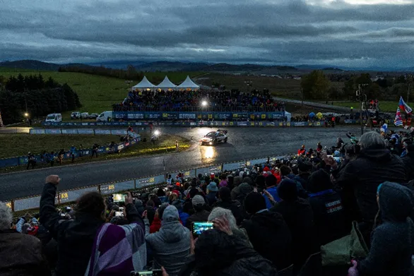
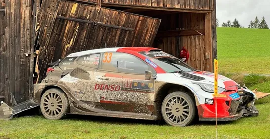
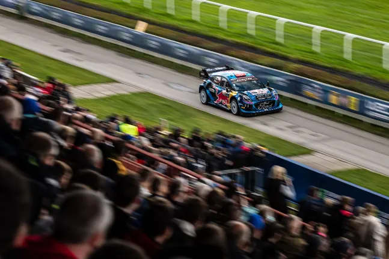
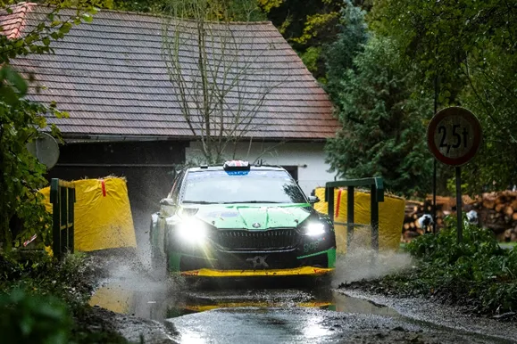
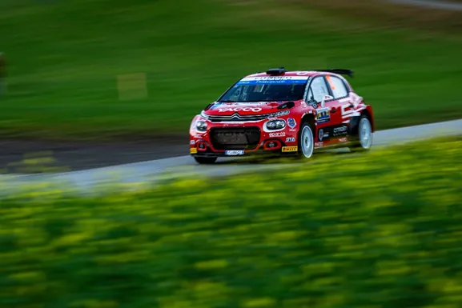

Winners and Losers from Rally Central Europe
The first ever Central European Rally was certainly a rally to remember. It was the first ever WRC rally held in 3 different countries, and it was also the rally where the 2023 Drivers’ championship was decided, as Kalle Rovanpera finished 2nd and claimed his second successive drivers’ crown. But apart from the Finn, there were more drivers that can leave the service park in Passau with their heads high and feel like winners, and similarly there’s some that can only wonder what could have been. So here are our winners and losers from the inaugural Central European Rally.
Winners
Kalle Rovanpera
Where do we even begin with Kalle’s 2023 season. I think the rally where it all clicked for him was Rally Portugal. In the first 4 rallies of the season, Kalle was there or thereabouts, but he was not quite the Kalle we saw in 2022. Sure, he was hampered by road cleaning in Sweden and Mexico and a tyre change in Croatia, but something was missing. And whatever was missing came back in Portugal. Kalle won in Portugal in dominant fashion and kick started his championship campaign. In fact, the only time where he made a mistake after Portugal was his big off from the lead in Finland, which in the end cost him more in pride than anything. In Central Europe Rovanpera was leading the rally by 10s over Thierry Neuville, but saw that his teammate and championship rival Elfyn Evans had gone off right before he started SS11, and decided to cruise to the end to ensure that the championship would be his. If it wasn’t for the championship fight and his mistake on SS10, then there’s any chance that Kalle would have won this rally as well. By the way, massive congrats to Jonne Halttunen as well, if it wasn’t for him, Kalle wouldn’t have been where he is now.
Thierry Neuville

Thierry Neuville got his second win of the season in Central Europe. It may not have come in the way he would have wanted, as Kalle backed off and handed him the lead, but that doesn’t take anything away from the Belgian’s drive. Neuville struggled on Friday with car setup and was off the pace of the leader, but on Saturday and Sunday he was rapid, managed his lead and in the end won, which is easier said than done with the tricky conditions the drivers faced. With the final round of the championship also being on tarmac, Neuville could be considered a strong contender for the win in Japan as well.
Adrien Fourmaux

To make a long story short, I think this was Fourmaux’s best drive to date. The Frenchman was rapid in Central Europe in the upgraded Fiesta, winning the unofficial RC2 class. Fourmaux lost a minute and a half on the first proper stage of the rally, but that didn’t stop him. The M-Sport driver won 9 out of the 18 stages of the rally, and some were in dominant fashion. In the first pass of Muhltal on Saturday he was a whopping 14 seconds faster than anyone else! Fourmaux will compete in Rally Japan in an M-Sport Puma Rally1, and I am eager to see what he can do. The Frenchman now seems more mature and is in a better position than he was in 2021 and 2022, and is all but confirmed to be in a Puma Rally1 next season.
Gregoire Munster

I apologise to Gregoire Munster. The
Luxembourger showed in Central Europe that he has Rally1 potential. Munster may
have acquired his two Rally1 outings by virtue of his friendship with Jourdan
Serderidis, but that takes nothing away from his performances in those two events.
Granted, Chile there were mistakes, but in Central Europe, in much more
difficult conditions Munster held his own and was even faster than the much
more experienced Pierre Louis Loubet, ending the rally in 7th. Well
done Gregoire, you put Jourdan’s car in good use, see you again in 2024?
The Spectators

CER marked the first time a WRC event was held in the Czech Republic, the first WRC event in Austria since 1973, and a return to Germany since the 2019 Rallye Deutschland. The tri-state event drew massive crowds, and you could see that the people where happy to have WRC back at their countries. But please, next time behave Czech fans, don’t stand on the outside of corners and don’t steal anti cuts. Thanks.
Honourable mentions are Andreas Mikkelsen who secured his 2nd WRC2 Championship in Central Europe, and Nicolas Ciamin who won the rally in the WRC2 category.
Losers
Elfyn Evans

Elfyn Evans’ title chances ended when the Welshman knocked on someone’s shed with his Yaris. Evans was running 3rd before his crash, but even if he finished 3rd, that wouldn’t have been enough to stop Kalle from winning his 2nd championship. Evans is in a rather familiar position of being “so close but yet so far” in terms of winning a maiden championship. He is now going to battle for 2nd with Neuville in what could be described as “The battle of the eternal Seconds” in Rally Japan.
Pierre Louis Loubet

A rather disastrous season from M-Sport number 2 finally comes to an end. Loubet will not compete in Japan, to try and get everything together for a 2024 campaign. Loubet’s Central European Rally pretty much sums up his entire 2023 season. He struggled on Friday, and had an off which cost him about 5 minutes, with him and new co driver Benjamin Veillas having to stop and change a tyre. And his streak of mechanical issues continued, as on Sunday his Puma developed a transmission problem which made Loubet cruise to the end. Loubet is still likely to be in an M-Sport Puma Rally1 come Monte next year, but that was Loubet’s 4th season in a premiere class, and he is yet to show any consistency…
Gus Greensmith

Gus Greensmith missed out on the WRC2 title, as he couldn’t capitalise on Mikkelsen’s off on Friday. Greensmith’s season has also been a mixed bag, showing good pace in Mexico, Portugal and Acropolis, while also suffering bad luck with punctureσ and mechanical issues. But again, Greensmith also struggled with consistency, and that’s what cost him the most. Let's see what Greensmith can do in 2024, in perhaps a different car.
Yohan Rossel

Yohan Rossel is probably the one who leaves Central Europe the saddest. Rossel was also in the frame of the WRC2 championship, but an accident on SS3 ended his rally, with the Frenchman suffering a suspected broken leg in the accident. Rossel could have had a better WRC2 campaign if he chose his rallies better in my opinion, it is weird that he and PH Sport chose to do Chile instead of Japan, as tarmac is the surface Rossel is best at. We wish him a speedy recovery and to see him in 2024.